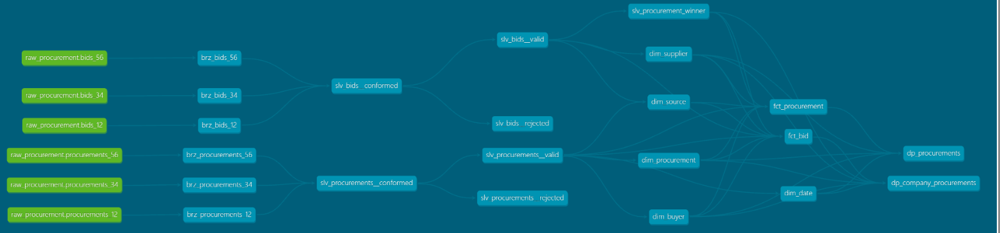

Procurement pipeline
A data-engineering take-home assignment: raw procurement and bid JSONL from three sources,
turned into two consumer-facing tables. Runs entirely locally: no server, no
credentials, no containers.
How it works
A medallion architecture, one job per layer:
- Bronze lands everything as-is. A bad row lands and is quarantined with a reason rather than failing the load.
- Silver conforms the three sources onto one shape, casts and validates to business grain, and routes rejects to a quarantine table (never deletion).
- Gold is a Kimball star — conformed dimensions and facts, each dimension with a dummy UNKNOWN member.
- Data product publishes two views, shaped for consumers.
Data model
The full dbt lineage — three sources through bronze, silver, a Kimball star in
gold, and the two published data-product views:

Open the interactive lineage graph → (dbt docs — click any model for its columns, tests and SQL)
Validate at the input, enforce at the output
One contract at each boundary, tests in between. A Python check gates the landed
files against acquisition's promises before dbt runs. The two published views
are the only models with an enforced schema contract — a rename or type change
fails the build inside a transaction, and the old view keeps serving.
Stack: dbt · DuckDB · Python · Claude
Code: github.com/Jule4ka/procurement_pipeline